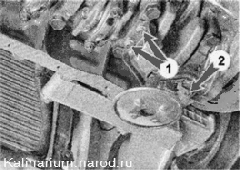

Маслозаборник снятие и установкаСнятие 1. Снимаем поддон картера двигателя. 2. Ключом на 10 мм отворачиваем два болта 1 крепления маслозаборника к крышке коренного подшипника и болт 2 крепления маслоприемника к корпусу масляного насоса. 
3. Снимаем маслозаборник, выводя его трубку из канала масляного насоса. Соединение маспозаборника с насосом уплотнено резиновым кольцом. Установка Устанавливаем маслозаборник в обратной последовательности, предварительно заменив поврежденное или потерявшее упругость уплотнительное кольцо. Болт крепления маслозаборника к масляному насосу длиннее, чем болты крепления маслозаборника к крышке коренного подшипника. |